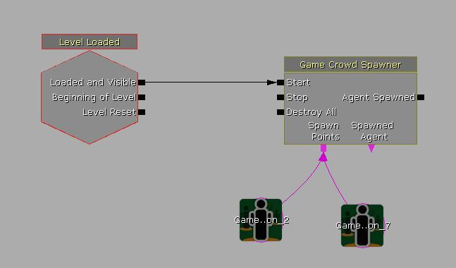
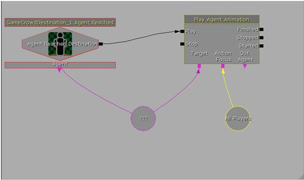

UDN
Search public documentation:
CrowdSystemCH
English Translation
日本語訳
한국어
Interested in the Unreal Engine?
Visit the Unreal Technology site.
Looking for jobs and company info?
Check out the Epic games site.
Questions about support via UDN?
Contact the UDN Staff
日本語訳
한국어
Interested in the Unreal Engine?
Visit the Unreal Technology site.
Looking for jobs and company info?
Check out the Epic games site.
Questions about support via UDN?
Contact the UDN Staff
群体系统
概述
 目前，在引擎中没有针对群体的渲染优化。群体中的每个成员都有一个唯一的 AnimTree 和骨架网格物体实例。但是，该系统确实避免了角色仿真（即 Unreal 走路物理和全部 AI）中性能消耗最大的部分。继走步行物理之后，网格物体群体的中下一个性能消耗最大的地方是为所有图形顶点植皮，所以您应该尽量保持骨架网格物体提的多边形数量和骨骼数量极可能地低（我们大概使用 1000-1500 个多边形和 20 个骨骼）。或许您也应该大量地使用 LOD。
目前，在引擎中没有针对群体的渲染优化。群体中的每个成员都有一个唯一的 AnimTree 和骨架网格物体实例。但是，该系统确实避免了角色仿真（即 Unreal 走路物理和全部 AI）中性能消耗最大的部分。继走步行物理之后，网格物体群体的中下一个性能消耗最大的地方是为所有图形顶点植皮，所以您应该尽量保持骨架网格物体提的多边形数量和骨骼数量极可能地低（我们大概使用 1000-1500 个多边形和 20 个骨骼）。或许您也应该大量地使用 LOD。
工作原理
群体成员管理器开关Kismet序列动作
输入链接
- Start -启用群体成员管理器。根据这个开关动作的可编辑属性更新它的属性。
- Stop - 禁用群体成员管理器。
指定要产生的代理
群体成员管理器可以产生多种类型的代理，且每个代理类型产生时可以有不同的频率。可以通过 GameCrowd_ListOfAgents 原型来指定要产生的代理的类型集合，这允许不同的产生器或群体成员管理器轻松地重用这个列表。在这个列表中，通过原型指定代理类型，正如在Agent Archetype(代理原型)部分所描述的。每种原型的产生频率可以通过相关联的 FrequencyModifier(频率修改器) 进行修改。选择某个特定原型的可能性等于它的 FrequencyModifier(频率修改器) 除以所有的 FrequencyModifiers(频率修改器) 总和后所得的值。 如果代理原型项指定了 GroupMembers ，那么基于这些原型的代理将会产生并以主要代理为首成群。成群的代理将会聚拢到一起，但不会排队(所以它们所使用的目的地必须有足够的空间来容纳整个组)。- CrowdAgentList - 这个群体成员管理器所产生的代理的原型列表。
- bClearOldArchetypes - 如果该项为true，那么讲清楚旧的群体成员管理器的原型列表，而不是将这个切换动作的CrowdAgentList附加到它的上面。
生成
生成代理的方法与生成粒子系统类似，但是您可以在关卡中使用一个或多个 actor 指定要生成代理的位置。这些位置一般是 GameCrowdDestinations ，但是也可以是任何类型的actor(为了使代理在目的地之间移动则必须是 GameCrowdDestination )。- SpawnRate - 每秒钟产生多少个代理。
- MaxAgents - 代理一次可以存活的最长时间。如果有些代理被销毁，那么将会再生成代理以达到这个最大值。
- WarmupPct - 当打开群体成员管理器时，要立即产生的群体人数占最大群体人数的百分比(不遵循可见性检测)。范围是 0.0 到1.0。
- bKillAgentsInstantly - 如果该项为true，那么当禁用群体成员管理器时立即销毁所有代理，而你不是让它们随着相关属性的失去而渐渐死亡。
- MaxSimulationDistance - 群体仿真中群体到相机的最大距离。
图像与动画
群体代理使用标准的 UE3 动画系统。它们使用LightEnvironment(光照环境)进行光照(就像Pawns一样)，但是默认情况下不会为飞跑动作投射动态阴影，除非设置它被群体产生器所覆盖。代理所使用的网格物体和动画通过它们的原型定义，在后面会有详细描述。- bEnableCrowdLightEnvironment(是否启用群体光照环境) - 是否在群体成员上启用光照环境。
- bCastShadows(是否投射阴影) - 群体成员是否投射阴影。
群体生成器 Kismet动作

输入链接
- Start - 启动产生的群体代理。
- Stop - 停止生成新代理。
- Destroy All - 销毁由该动作生成的所有代理。(将不播放死亡动画)
- Spawn Points(产生位置) - 产生代理的位置。通常它是一个GameCrowdDestination ，但它可以是任何actor (必须是 GameCrowdDestination ，以便使代理在目的地之间移动)。
输出链接
- Agent Spawned - 当产生一个代理时触发。
- Spawned Agent - 输出最后产生的代理
指定要产生的代理
一个群体产生器可以产生多种类型的代理，且每个代理类型产生时可以有不同的频率。可以通过 GameCrowd_ListOfAgents 原型来指定要产生的代理的类型集合，这允许不同的产生器或群体成员管理器轻松地重用这个列表。在这个列表中，通过原型指定代理类型，正如在Agent Archetype(代理原型)部分所描述的。每种原型的产生频率可以通过相关联的 FrequencyModifier(频率修改器) 进行修改。选择某个特定原型的可能性等于它的 FrequencyModifier(频率修改器) 除以所有的 FrequencyModifiers(频率修改器) 总和后所得的值。 如果代理原型项指定了 GroupMembers ，那么基于这些原型的代理将会产生并以主要代理为首成群。成群的代理将会聚拢到一起，但不会排队(所以它们所使用的目的地必须有足够的空间来容纳整个组)。- CrowdAgentList - 这个群体产生器所产生的代理的原型列表。
图像与动画
群体代理使用标准的 UE3 动画系统。它们使用LightEnvironment(光照环境)进行光照(就像Pawns一样)，但是默认情况下不会为飞跑动作投射动态阴影，除非设置它被群体产生器所覆盖。代理所使用的网格物体和动画通过它们的原型定义，在后面会有详细描述。- AgentLightingChannel (代理光照通道) - 放置代理的光照通道。
- bEnableCrowdLightEnvironment(是否启用群体光照环境) - 是否在群体成员上启用光照环境。
- bCastShadows(是否投射阴影) - 群体成员是否投射阴影。
生成
生成代理的方法与生成粒子系统类似，但是您可以在关卡中使用一个或多个 actor 指定要生成代理的位置。这些位置一般是 GameCrowdDestinations ，但是也可以是任何类型的actor(为了使代理在目的地之间移动则必须是 GameCrowdDestination )。- SpawnRate - 每秒钟在目标 actor处生成多少个代理。
- SpawnNum - 可以同时存活的代理的最大数量。如果有些代理被销毁，那么将会再生成代理以达到这个最大值。
- SpawnRadius (产生半径) - 目标actor周围可以产生代理的半径范围。
- bOnlySpawnHidden(是否仅隐藏生成代理) - 如果为真，则仅在玩家不能看到的位置产生代理。
- AgentWarmupTime(代理准备时间) - 在如果没有渲染产生的代理，那么让它们进入睡眠状态前所需要的平均准备时间。
- bRespawnDeadAgents(是否重新产生死亡的代理) - 如果为true，则可以重新产生完全删除的代理。
- SplitScreenNumReduction (分隔屏幕时的数量下降量) - 当在分隔屏幕时，代理的数量的下降多少。
- bCycleSpawnLocs - 如果该项为true，那么产生器将循环便利产生位置，而不是随机地选择一个产生位置。
- bWarmupPosition - 如果该项为true，代理将在初始产生位置和玩家不能看到的它的初始目标位置之间的一个随机点处找到一个起始位置。
移动到目的地
新产生的代理将会选择一个 GameCrowdDestination 来向前移动。这个目的地是从 GameCrowdDestination 中作为代理产生位置的目的地列表中、或者从附加到群体产生器的 Destinations(目的地) 输入端上的 GameCrowdDestinations 中选择的。群体产生器也可以覆盖代理原型的基本设置来强制(性能消耗更大)使用导航网格物体寻路和障碍物阻挡。- bForceObstacleChecking(是否强制障碍检测) - 如果为true，则强制所有从这个产生器中产生的代理进行障碍检测。
- bForceNavMeshPathing (是否强制导航网格寻路) - 如果为true，则强制所有从这个产生器中产生的代理使用导航网格寻路。
GameCrowdAgent(游戏群体代理)
图像与动画
代理的视觉效果属性由它们的原型指定。典型的群体成员将使用基于骨架动画的网格物体，它具有基于 GameCrowdAgentSkeletal 子类的原型。- SkeletalMeshComponent(骨架网格物体组件) - SkeletalMeshComponent 用于群体成员网格物体。需要设置代理所使用的网格物体、动画树模板、动画集。
- WalkAnimNames(走路动画名称) - 当缓慢地移动时所使用的动画循环的名称。
- RunAnimNames (跑步动画名称) - 当快速地移动时所使用的动画的名称。
- MeshMinScale3D, MeshMaxScale3D - 应用到代理网格物体上的3D 描画比例的范围。
- AmbientSoundCue(环境声效) - 在这个代理上所播放的环境声效。
- SpeedBlendStart - 低于这个速度，使用走路动画。
- SpeedBlendEnd - 高于这个速度，使用跑动动画。在这个速度和 SpeedBlendStart 之间时，两个动画结合使用。
- AnimVelRate - 它可以控制如何根据代理的速度改变播放动画的速率。
- MaxSpeedBlendChangeSpeed - 限制了在跑步和走路的混合发生时的混合速度。
- MoveSyncGroupName - 用于移动的同步组的名称，它的速率将被缩放。

代理附加物
可以指定代理的原型产生时具有Attachments数组指定的随机的附件(attachments)。- Attachments (附件) - 用于附加到代理上的网格物体集合的列表。
- SocketName(插槽名称) - 用于附加网格物体的插槽名称。
- List(列表) - 可能用于附加到这个插槽的网格物体列表。
- StaticMesh(静态网格物体) - 要附加的网格物体。
- Chance (几率) - 选择这个附加物的几率。
- Scale3D(缩放3D) - 当附加网格物体时所应用到网格物体的缩放比例。
- List(列表) - 可能用于附加到这个插槽的网格物体列表。
- SocketName(插槽名称) - 用于附加网格物体的插槽名称。
运动
这是群体代理将遵循的一些规则，及和每个规则相关的代理原型中的设置。对所应用的代理强制执行每一条规则。当前的代理移动系统将代理作为成群移动的粒子进行处理。以后，代理运动可能会移动到一个使用 reciprocal velocity obstacles(倒数障碍速度)系统中(http://gamma.cs.unc.edu/RVO/icra2008.pdf)。排除障碍
代理不会执行一般的碰撞检测，因此可能会穿过关卡中的几何体。有一个选项可以使代理通过使用导航网格物体执行障碍物检测，它将会放置代理穿透几何体或者从岩壁上掉落下来。即使没有障碍检测，如果代理使用导航网格物体寻路，它们一般将会表现得很好。- bCheckForObstacles(是否检测碰撞) - 障碍网格物体是否阻挡代理。
速度区间限定
使用跟骨骼运动速度将会产生最好的视觉效果。它需要动画中含有跟骨骼运动。使用这个选项，除了在某些情况下代理由于障碍或急速转弯必须移动的较慢外，代理的运动将会和它们的动画相匹配。- bUseRootMotionVelocity(是否使用跟骨骼运动速度) - 如果为该项为true，则基于运动动画中的根骨骼运动来对速度进行区间限定。
- bClampMovementSpeed(运动速度区间限定) - 是否对运动速度进行区间限定。
- MaxWalkingSpeed(最大的走路速度) - 最大的走路速度(如果没有使用根骨骼运动速度)。
- MaxRunningSpeed(最大的跑步速度) - 最大的跑步速度(如果没有使用根骨骼运动速度)。
- VelocityDamping(速度区间限定) - 用于限制代理的最大速度的力。可以把它看成‘摩擦力’。
避开邻近的代理
代理可以避开邻近的代理和pawns。目前，使用一个简单的弹力来避免两个代理间的穿透。使用一个从GamePlayerController派生出的并设置 bWarnCrowdMembers 为真的玩家控制器的玩家将在每一次渲染时更新群体成员的位置，从而可以更加准确地使代理相互避开。 |* AwareRadius - 控制在获得平均速度时系统可以看到代理周围多远的距离。- AvoidOtherStrength - 当代理相互重叠时将它们分离开的强度。
- AvoidPlayerStrength - 代理被玩家推开的艰难程度。
- AvoidOtherRadius - 用于检查代理之间是否重叠的半径（通常是指代理有多大）。
- AwareUpdateInterval - 每隔多少帧代理的‘意识’进行更新 (attractors和其它代理)。
以相邻代理的速度运动
代理尝试以它们周围的代理的平均速度运动。- MatchVelStrength - 代理与其附近代理的速度进行匹配的程度。
保持成组状态
成组的代理(请参照SeqAct_GameCrowdSpawner中的 GroupMembers ) 将通过使用以下的属性及 GroupWaitingBehaviors (请参照自定义的代理行为))努力地保持在一起。- GroupAttractionStrength(组引力强度) - 当超出DesiredGroupRadius (期望的组半径)时，需要使用多大的强度将组的成员拉到一起。
- DesiredGroupRadius(期望的组半径) - 尝试使组成员间这么近的保持在一起。
代理寻路
因为群体代理不会像玩家一样在关卡中进行碰撞检测，它们依靠使用导航网格进行寻路来避免穿过关卡中的几何体。由于寻路会带来一些性能消耗，所以对于仅在两个可以直接到达的目的地间进行穿行的代理，禁用寻路功能将会更加的高效。- bUseNavMeshPathing (是否使用导航网格寻路) - 如果为真，使用导航网格寻路。
- *FollowPathStrength(沿路径的力度) * - 代理在路径方向(朝向它们的目标)的加速度。
代理旋转
以下属性控制代理在行走时的旋转度。- MaxYawRate - 群体代理旋转面向他们正在游走的方向。这个值可以限制他们转向执行该动作的速度，避免他们旋转得太快。
- bAllowPitching(是否允许倾斜) - 当代理向当前穿行方向旋转前行时是否允许它倾斜。
- RotateToTargetSpeed(旋转到目标的速度) - 这控制了代理将旋转面向它的目标的速度。
- MaxTargetAcquireTime - 在播放动画前，代理尝试朝向一个目标旋转的最大时间值。
适应地面
如上所述，代理可以通过使用垂直的零粗细线性检测来适应不平坦的表面。注意，这种方法没有‘最大步伐高度’的概念，而且不会正确地处理非常陡峭或垂直的表面。默认情况下，代理将适应符合导航网格物体表面。对于某些特殊的情况，它们可以和BSP或者世界中所有的几何体相适应。- *ConformType(适应类型) - 代理如何适应表面。
- GroundOffset (地面偏移量) - 从地面到代理中心的距离(用于调整脚部的位置)。
- ConformTraceDist(符合跟踪距离) - 要跟踪多远来使代理适应贴合bsp/世界。
- ConformTraceInterval - 每个多少帧进行一次‘贴合表面’的直线检测。
群体仿真的细节层次（LOD）
和视觉效果LOD不同，群体代理基于它们到玩家的距离和可见性来调整它们的仿真效果。目前暴露了6个属性使您可以调整代理原型的仿真LOD。- NotVisibleLifeSpan (不可见的生命范围) - 当代理不能看到时，需要等多长时间后才销毁该代理。
- NotVisibleTickScalingFactor(不可见时更新的缩放因子) - 当代理不可见时，每次刷新更新代理时的缩放因子。
- ProximityLODDist - 不可见的代理不在LOD邻近检测内的距离。
- VisibleProximityLODDist - 可见的代理不在LOD邻近检测内的距离。
- MaxAnimationDistance - 当相机距离群体代理的最大距离达到该项设置的值时群体代理应该进行动画。
- MaxLOSLifeDistance - 如果在NotVisibleLifeSpan中没有渲染群体代理，但是他它们仍然可能在玩家可见范围内出现，那么要保持代理出现的最大距离。
自定义代理行为
默认的代理行为是在 GameCrowdDestinations 间移动。这个默认的行为可以通过使用“插件式”的行为系统进行覆盖设置。设计人员可以通过基于GameCrowdAgentBehavior类创建行为Behavior Archetypes(行为原型)来分配行为给基于各种游戏事件的触发器(注意：GameCrowdAgentBehavior类是Object类的一个子类，所以在类别浏览器不要选中"Actor classes only(仅Actor类别)"以便可以找到它)。几个基本的行为类是在基本的群体系统中实现的，其它的额外的针对游戏的行为可以在游戏工程中创建。设计人员可以在行为原型中自定义这些行为。请查看下面的GameCrowdAgentBehavior(游戏群体代理行为)项获得更多的信息。 当一个代理行为完成并停止，而且没有其它的行为分配给此代理时，代理将会返回到在 GameCrowdDestinations 间移动的默认行为。 行为原型将会被分配给代理原型 BehaviorEntry 数组，或者分配给 GameCrowdDestination ReachedBehavior BehaviorEntry 数组。当合适的游戏事件被触发，将会从那个事件的可能行为列表中分配一个行为给代理。每个 BehaviorEntry 有以下可编辑的属性：- BehaviorArchetype(行为原型) - 基于GameCrowdAgentBehavior 类的原型。
- BehaviorFrequency(行为频率) - 选择这个行为的频率=行为频率/所有行为频率的总和 |
- bNeverRepeat(永远不会反复) - 如果为true，代理将永远不会重复这个行为。
- EncounterAgentBehaviors(遇到代理行为) - 当遇到另一个代理(仅当如果没有当前行为时)时选择的行为。这些行为在一个代理遇到(在它的 AwareRadius 内)另一个代理，两个代理相互面对时进行触发。
- GroupWaitingBehaviors(组等待行为) - 当等待其它组中的成员时要选择的行为。
- SeePlayerBehaviors (看到玩家行为) - 当看到一个玩家时要选择的行为。
- SeePlayerInterval - 看到玩家事件的触发频率。如果为0，则永远没有反复触发。
- SpawnBehaviors - 当代理产生时要选择的行为。
- PanicBehaviors(惊慌时的行为) - 当代理惊慌时要选择的行为。
- RandomBehaviors（随机行为） - 在RandomBehaviorInterval 时随机选择的行为。
- RandomBehaviorInterval(随机行为间隔) - 两个随机行为尝试间的平均时间(仅当如果代理对玩家处于不可见状态并且没有当前行为时)。
- Health（生命值） - 在代理死亡前可以经受多少伤害。
- DeathAnimNames(死亡动画名称) - 在代理死亡时可以播放的动画名称集合。
- DeadBodyDuration(尸体持续时间) - 尸体可以保持的时间长度。
- bPreferVisibleDestination - 如果该项为true，那么如果从非-L.O.S.目标点开始代理将倾向于在玩家视野范围内的目标点。|
- bPreferVisibleDestinationOnSpawn - 如果该项为true，那么将会代理生成后相对于所选择的第一个目标点可见的目标点。
调试代理的行为
假设您游戏的PlayerController类是从 GamePlayerController 派生而来的，控制台命令'CrowdDebug 1'将会在代理头部附近的上方显示出代理的相关信息。控制台命令 'ShowGameDebug' 将显示关于群体成员管理器的信息，并且'stat crowd'命令将会显示群体系统的性能统计数据。销毁代理
您可以使用任何能引起痛苦的体积来销毁群体代理，或者可以设置 GameCrowdDestination 设来销毁到达它的代理。当销毁后， GameCrowdAgentSkeletal 将会播放它的 DeathAnimNames 数组中的一个动画。 GameCrowdAgents 也可以被损害，并且当它们的生命值低于0时它们将会死去。要允许武器碰撞，它们需要使用 bEnableLineCheckWithBounds 选项，该项可以执行针对网格物体的包围盒的线框的线性检测。它非常非常近似的处理，但是可以避免多余的 CylinderComponent(圆柱体组件) 开销或者避免了执行较为昂贵的给予每个骨骼的碰撞检测的开销。GameCrowdAgentBehavior(游戏群体代理行为)
- bIdleBehavior - 如果为真，代理应该是空闲的(不在目的地之间移动)。
- MaxPlayerDistance - 当代理在玩家的这个距离之内时执行这个行为。
- bFaceActionTargetFirst - 如果为真，在启动行为前必须面向动作对象。
- bIsViralBehavior - 如果为真，将行为传递给遇到的代理。
GameCrowdBehavior_PlayAnimation
- AnimationList - 要播放的动画列表。
- BlendInTime - 混合到下一个动画内的时间。
- BlendOutTime - 从混合动画中出来的所花的时间。
- bUseRootMotion - 是否使用根骨骼运动。
- bLookAtPlayer - 如果为true，在启动动画前，面向玩家。
- bLooping - 如果为true，循环执行列表由LoopIndex中指定的动画。
- LoopIndex - 如果bLooping 为true，它用于确定循环执行AnimationList(动画列表)中的那个动画。
- LoopTime - 如果bLooping 为true，它指出了循环动画的时间长度，-1.0 == 无限时间。
- bBlendBetweenAnims - 列表中的动画间是否应该混合。如果它们在开始/结束时不相匹配，则设置它为true 。
GameCrowdBehavior_RunFromPanic
这是一个非常简单的实现，它将会导致代理从它们恐慌的源开始到跑，像病毒一样传染给它所遇到的其它代理。这是为了作为这个功能类型的一个实例实现而设计的。GameCrowdBehavior_WaitInQueue
这个行为不会暴露给关卡设计人员使用，因为它和持有队列位置的目的地有关。GameCrowdBehavior_WaitForGroup
这个简单的行为是作为添加到一个代理 GroupWaitingBehaviors 的原型的基础而设计的。使用这个行为的代理将处于空闲状态并面向它们正在等待的代理，直到它已经变得足够的近。GameCrowdInteractionPoint
- bIsEnabled - 当前是否启用了interactionpoint (交互点)|
GameCrowdDestination(游戏群体目的地)
GameCrowdDestinations 是群体代理的目的地，也可以为到达这个目的地的代理实现自定义行为。在编辑器中选择的 GameCrowdDestinations ，将会显示到所连接的目的地的连线(在 NextDestinations 类表中)。选择多个 GameCrowdDestinations 并按下ctrl-shift-L键连接它们(添加它们自己到各自的 NextDestinations 数组中)。选择多个 GameCrowdDestinations 并按下ctrl-shift-U将会断开它们的连接。- bKillWhenReached - 如果为真，当群体成员到达这个目的地时销毁它们。
- NextDestinations - 随机地从活动的目的地列表中选择一项作为代理的下一个目的地。
- bAllowAsPreviousDestination - 如果代理的前一个目的地在NextDestinations 列表中，那么它是否可以作为目的地。
- Capacity - 可以同时有多少个代理使用这个作为目的地。
- QueueHead - 如果目的地的容量是有限的，代理要等待的队列中的第一个位置。请查看以下编辑器的快捷方式来设置这个值。
- Frequency - 代理在前一个目的地时从里表中选择这个目的地的可能性。
- bAvoidWhenPanicked - 如果恐慌，则不到达这个目的地。
- bFleeDestination - 总是向这个目的地跑动。
- bSkipBehaviorIfPanicked - 如果发生恐慌，不在这个目的地执行kismet 或自定义行为。
- bMustReachExactly - 必须精确地到达这个目的地的中心-当关闭时将会强制运动。
- bSoftPerimeter - 当代理到达目的地半径的边缘时是否应该停止(如果没有准确地到达)或者有一个“软”的周界。
- InteractionTag - 交互类型。
- InteractionDelay - 允许一个代理再次尝试进行这种交互所需的时间。
- ReachedBehaviors - 到达这个目的地的代理将会从这个列表中选择一个行为。
- SupportedAgentClasses - 如果设置，仅有这个类的代理可以使用这个目的地。
- SupportedArchetypes - 如果设置该项，则来自这个原型的代理可以使用这个目的地。 | * RestrictedAgentClasses - 如果设置该项，则这个类的代理不能使用这个目的地。
- RestrictedArchetypes - 如果设置该项，则来自这个原型的代理不能使用这个目的地。
- bLineSpawner - 以直线产生代理而不是圆形。
- SpawnRadius - 产生代理位置周围用于生成代理的半径。
- bSpawnAtEdge - 只在圆边缘生成代理，还是在圆内的任意点都生成代理。
- bAllowsSpawning - 这个位置是否允许产生代理。
GameCrowdInteractionDestination(游戏群体交互目的地)
GameCrowdInteractionDestinations 没有任何独特的功能。它们是 GameCrowdDestination 类的一个简单子类，具有一般用于自定义交互目的地的设置，比如目的地的容量及恐慌的代理忽略此目的地。GameCrowdDestinationQueuePoint(游戏群体目的地队列点)
GameCrowdDestinationQueuePoints 用于使代理在一个具有有限容量的目的地中进行排队。- NextQueuePosition - 在队列中这个代理后面的队列位置。请查看以下的边界器快捷方式来设置。
- AverageReactionTime - 在代理对队列运动产生反应前所需要的平均暂停时间。
SeqEvent_CrowdAgentReachedDestination
SeqAct_PlayAgentAnimation

播放代理动画动作包含以下输入端：- Play - 启动要播放的动画。
- Stop(停止) - 停止当前的动画。
- Target(目标) - 调用这个动作的代理。
- Action Focus(动作焦点) - 当执行这个动作时代理应该面向该actor 。
- Finished(完成) - 当动作完成时的事件。
- Stopped(停止) - 当动作停止时的事件。
- Started(启动) - 当动作启动时的事件。
- Out Agent - 最近一次执行这个动作的代理。
- AnimationList - 当在这个节点时要播放的动画列表。
- BlendInTime - 混合到下一个动画内的时间。
- BlendOutTime - 从混合动画中出来的所花的时间。
- bUseRootMotion - 是否使用根骨骼运动。
- bFaceActionTargetFirst - 如果为true，在启动动画前要面向动作目标。
- bLooping - 如果为true，循环执行列表由LoopIndex中指定的动画。
- LoopIndex - 如果bLooping 为true，它用于确定循环执行AnimationList(动画列表)中的那个动画。
- LoopTime - 如果bLooping 为true，它指出了循环动画的时间长度，-1.0 == 无限时间。
- bBlendBetweenAnims - 列表中的动画间是否应该混合。如果它们在开始/结束时不相匹配，则设置它为true 。
下载
- 下载示例地图。